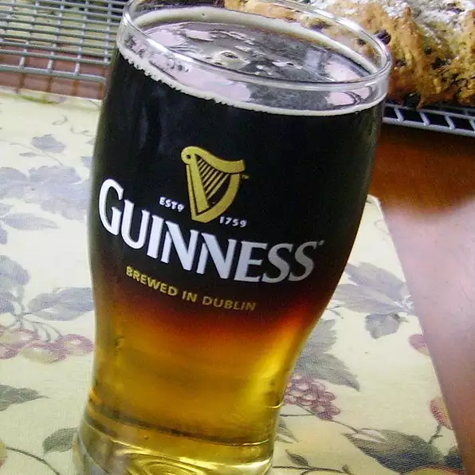

Stout and Ale

Description
This is a St. Patrick's Day staple at our house. Don't be fooled by the simple ingredients...The trick is getting them to layer just right. The key is to pour the stout SLOWLY. Enjoy!
Ingredients
- (12 fluid ounce) bottle lager beer (such as Harp)
- (12 fluid ounce) can or bottle Irish stout beer (such as Guinness)
Steps
- Gently pour half the lager beer into a tall beer glass. Place a large tablespoon, dome side up, an inch or so above the lager beer, with the tip of the spoon pointed slightly downhill. Slowly pour half the stout beer over the tablespoon, so the stout gently pours down the side of the glass in a thick trickle. Allow to stand a few seconds so 2 distinct layers of beer form.